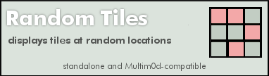

random_tiles.lua |
|
|---|---|
random_tiles:Standalone & Multim0d-compatible dec 19 2009 jm ervin Sets specified tiles at random locations within a designated ground area. Properties section |
|
|
Metaplace Lua included script state variables via properties that could be hidden, exposed or persisted. Here there are "constant" properties as well as user-config properties. Vars deemed contstant-by-convention are indicated by ALL CAPS |
Define Properties()
inited = false
im_running = false
RANDOM_TILES_MIN_LOOP_MS = 30
|
|
declare default and/or hot-start values for any public properties. |
RANDOM_TILES_DEFAULT_X = 1
RANDOM_TILES_DEFAULT_Y = 1
RANDOM_TILES_DEFAULT_W = 1
RANDOM_TILES_DEFAULT_H = 1
RANDOM_TILES_DEFAULT_DELAY = 0
RANDOM_TILES_CLEAN = 0
RANDOM_TILES_NUM_TILES = 4
RANDOM_TILES_REPS = 12
RANDOM_TILES_LIVE_TILE = 4
RANDOM_TILES_BASE_TILE = 1
RANDOM_TILES_LOOP_TIME_MS = 250
|
|
Some silly Tool issues compelled this bit of egregiousness. |
param_count = 11
|
|
User-accessible Properties |
random_tiles_x = RANDOM_TILES_DEFAULT_X
PersistProperty('random_tiles_x')
ExposeProperty('random_tiles_x', 'upper-left x value of playback area (default: ' ..RANDOM_TILES_DEFAULT_X ..")")
random_tiles_y = RANDOM_TILES_DEFAULT_Y
PersistProperty('random_tiles_y')
ExposeProperty('random_tiles_y', 'upper-left y value of playback area (default: ' ..RANDOM_TILES_DEFAULT_Y ..")")
random_tiles_w = RANDOM_TILES_DEFAULT_W
PersistProperty('random_tiles_w')
ExposeProperty('random_tiles_w', 'playback area width (default: ' ..RANDOM_TILES_DEFAULT_W ..")")
random_tiles_h = RANDOM_TILES_DEFAULT_H
PersistProperty('random_tiles_h')
ExposeProperty('random_tiles_h', 'playback area height (default: ' ..RANDOM_TILES_DEFAULT_H ..")")
random_tiles_clean = RANDOM_TILES_CLEAN
PersistProperty('random_tiles_clean')
ExposeProperty('random_tiles_clean', 'Restore span to base tile after each run.', 'checkbox')
random_tiles_delay = RANDOM_TILES_DEFAULT_DELAY
PersistProperty('random_tiles_delay')
ExposeProperty('random_tiles_delay', 'Startup delay. (default: ' ..RANDOM_TILES_DEFAULT_DELAY ..")")
random_tiles_num_tiles = RANDOM_TILES_NUM_TILES
PersistProperty('random_tiles_num_tiles')
ExposeProperty('random_tiles_num_tiles', 'How many tile changes per repetition?')
current_rep = RANDOM_TILES_REPS
random_tiles_reps = RANDOM_TILES_REPS
PersistProperty('random_tiles_reps')
ExposeProperty('random_tiles_reps', 'Number of repetitions per run.')
random_tiles_live_tile = RANDOM_TILES_LIVE_TILE
PersistProperty('random_tiles_live_tile')
ExposeProperty('random_tiles_live_tile', 'Tile Id for on-tile.')
random_tiles_base_tile = RANDOM_TILES_BASE_TILE
PersistProperty('random_tiles_base_tile')
ExposeProperty('random_tiles_base_tile', 'Tile Id for base-tile.')
random_tiles_loop_time_ms = RANDOM_TILES_LOOP_TIME_MS
PersistProperty('random_tiles_loop_time_ms')
ExposeProperty('random_tiles_loop_time_ms', 'Looping interval, in milliseconds. (caution!)')
|
|
Specify the call signature here. This is just an informative string and should indicate all parameters (in order) needed to manually call this plugin. Param onchanges are caught and reverted, SEE "parm_changed" method |
PARAMS_SIGNATURE = " X, Y, WIDTH, HEIGHT, DELAY(ms), PER-RUN-CLEANUP? (0 or 1), #TILES, #REPS, TILE-ON, TILE-OFF, LOOP-TIME(ms)"
PARAMS_SIGMSG = "sig used for Multim0d manual mode calls (opt)"
random_tiles_signature = PARAMS_SIGNATURE
ExposeProperty('random_tiles_signature', PARAMS_SIGMSG)
|
|
Standard required tool version, name and description fields |
bt_behavior = 1
bt_desc = "display tiles at random positions"
bt_name = 'random_tiles'
bt_help_image = '204484:11'
bt_help_height = 108
end
|
Methods and Handlers[ Triggers would be called by the sim serverside, given the appropriate conditions ] Param Changed [Required Boilerplate] This is a mild bit of hackery. The Call Signature of an effect needed to be displayed on the Behavior Tool, but there was no way to write R/O text, only text that could be potentially altered by the user. As a workaround each Multim0d effect would respond to the BT onchange trigger in order to revert attempted changes to any public properties that needed to be R/O, such as the call signature. |
Trigger param_changed(owner, owner_id, script_id, prop)
local pname = self.bt_name .."_signature"
if (prop == pname) then
Debug("< SIG CHANGED > " .."script_id=" ..script_id .." owner_id=" ..owner_id)
SendTo(self, 'set_script_param', 0, owner, owner.id, script_id, prop, self.PARAMS_SIGNATURE)
Debug("reverting signature, you silly rabbit!")
end
end
|
|
Process a frame iteration
|
Trigger random_tiles(x0,y0,xr, yr)
local lx=0
local ly=0
for i=1,self.random_tiles_num_tiles do
lx = math.random(xr) + x0 -1
ly = math.random(yr) + y0 -1
if (GetTileAt(lx,ly) ~= self.random_tiles_live_tile) then
SetTileAt(lx,ly,self.random_tiles_live_tile)
elseif (GetTileAt(lx,ly) == self.random_tiles_live_tile) then
SetTileAt(lx,ly,self.random_tiles_base_tile)
end
end
if (self.im_running == true) then
self.current_rep = self.current_rep -1
if (self.current_rep >0) then
SendTo(self,self.bt_name,self.random_tiles_loop_time_ms,x0,y0,xr,yr)
else
self.current_rep = self.random_tiles_reps
random_tiles_cleanup(self.random_tiles_clean,x0,y0,xr,yr,self.random_tiles_base_tile)
self.im_running = false
Debug(self.bt_name .." completed")
SendTo(self,'multimod_cmd_done',0)
end
else
random_tiles_cleanup(self.random_tiles_clean,x0,y0,xr,yr,self.random_tiles_base_tile)
self.im_running = false
Debug(self.bt_name .." halting")
SendTo(self,'multimod_cmd_done',0)
end
end
|
|
Cleanup [API, Optional] Cleanup to restore source tiles to whatever they were prior to the effect run. Reset tiles all to the original base tile. This version assumes uniform tile for the expanse. |
function random_tiles_cleanup(c,x0,y0,xr,yr,t)
if (c==1) then
local xm = x0 + (xr-1)
local ym = y0 + (yr-1)
for i=x0,xm do
for k=y0,ym do
SetTileAt(i,k,t)
end
end
end
end
|
|
Validate [API, Optional] Parameter validations. Validations will probably be custom for each effect, |
function random_tiles_validate_params(owner,p)
p[1] = math.abs(p[1])
p[2] = math.abs(p[2])
p[3] = math.abs(p[3])
p[4] = math.abs(p[4])
p[5] = math.abs(p[5])
p[6] = math.abs(p[6])
p[7] = math.abs(p[7])
p[8] = math.abs(p[8])
p[9] = math.abs(p[9])
p[10] = math.abs(p[10])
if (tonumber(p[11]) < owner.RANDOM_TILES_MIN_LOOP_MS) then
p[11] = owner.RANDOM_TILES_MIN_LOOP_MS
end
end
|
|
Init any one-time init items go here. Not much interesting in this one... |
function random_tiles_init(owner)
owner.inited = true
end
|
|
Shutdown [API, REQUIRED] Vary the internals as desired, just be sure to invoke a crisp shutdown! |
Trigger mod_shutdown()
if (self.im_running == true) then
Debug(self.bt_name .." mod_shutdown recieved")
end
self.im_running = false
end
|
|
Standalone Shutdown [API, Optional] only needed if your module has a standalone mode. |
Trigger random_tiles_shutdown()
self.im_running = false
SendTo(self,'multimod_cmd_done',0)
Debug(self.bt_name .." shutdown called!")
end
|
|
Trigger for standalone usage [API, Optional] only needed if your module has a standalone mode. If there is actually no Multim0d player and this module is not aready running
|
Trigger use(user)
if (self.multimod_present == nil) then
Debug("- Standalone mode -")
if (self.im_running == false) then
self.im_running = true
self.current_rep = self.random_tiles_reps
Debug(self.bt_name ..' - running -')
SendTo(self,self.bt_name,self.random_tiles_delay,self.random_tiles_x,self.random_tiles_y,self.random_tiles_w,self.random_tiles_h)
else
Debug("MANUAL HALT!")
SendTo(self,self.bt_name ..'_shutdown',0)
self.im_running = false
end
end
end
|
|
Main entry point [API, Required] : This is called by the Player and is passed a Player-opaque, possibly empty table of support params. This call starts the plugin running and should behave idempotently.
And finally, select for effect option and call with appropriate handler reference. |
Trigger random_tiles_startup(xparams)
if (self.im_running == false) then
self.im_running = true
if (self.inited == false) then
random_tiles_init(self)
end
if (#xparams ~= 0) then
if (#xparams == self.param_count) then
random_tiles_validate_params(self,xparams)
self.random_tiles_x = xparams[1]
self.random_tiles_y = xparams[2]
self.random_tiles_w = xparams[3]
self.random_tiles_h = xparams[4]
self.random_tiles_delay = xparams[5]
self.random_tiles_clean = xparams[6]
self.random_tiles_num_tiles = xparams[7]
self.random_tiles_reps = xparams[8]
self.random_tiles_live_tile = xparams[9]
self.random_tiles_base_tile = xparams[10]
self.random_tiles_loop_time_ms = xparams[11]
else
Debug(self.bt_name .." ERROR: incorrect number of playlist params")
end
end
self.current_rep = self.random_tiles_reps
Debug('random_tiles running...')
SendTo(self,self.bt_name,self.random_tiles_delay,self.random_tiles_x,self.random_tiles_y,self.random_tiles_w,self.random_tiles_h)
else
Debug('random_tiles sez: not yet...')
self.im_running = false
end
end
|